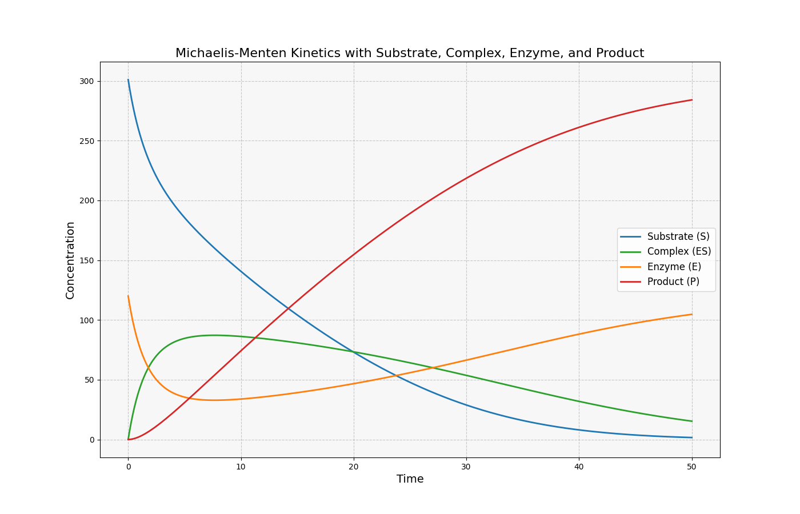
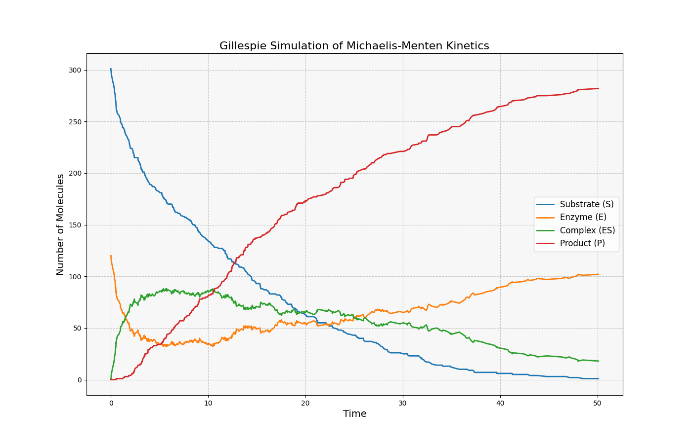
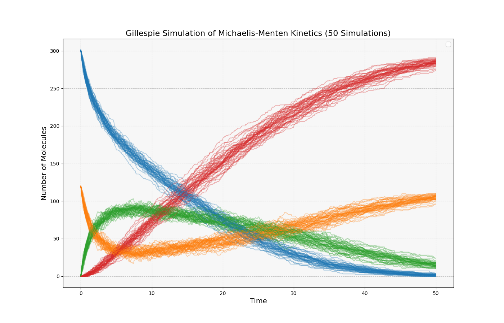
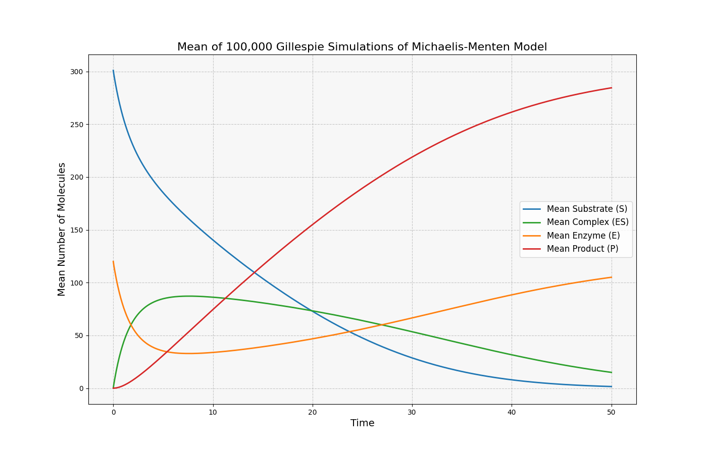
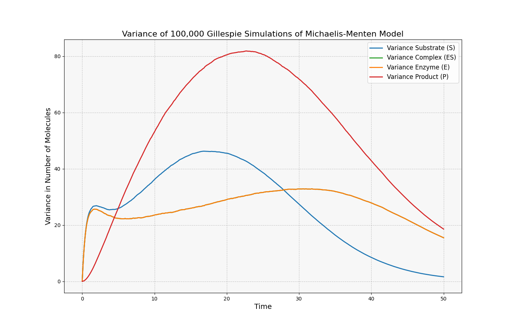

Modeling the System of Differential Equations
Biochemical reactions involve proteins called enzymes, acting as catalysts, which selectively react with compounds called substrates. A fundamental enzymatic reaction proposed by Michaelis and Menten involves a substrate S reacting with an enzyme E to form a complex SE, which subsequently transforms into a product P and the original enzyme. Schematically,
\({\displaystyle \ce{E + S <=>[k_1][k_{-1}] ES ->[k_2] E + P}}\)
The Law of Mass Action states that the rate of a chemical reaction is directly proportional to the concentrations of the reactants. The constant parameters k1, k-1, k2, are constants of proportionality associated with the rates of the reactions. By denoting the concentrations of the reactants as follows.
\( s = [S],\ e = [E],\ c = [SE],\ p = [P] \)
Applying the Law of Mass Action, we arrive at the system of nonlinear equations and the following initial values for each reactant
\[ \frac{ds}{dt} = -k_1es + k_{-1}c, \quad \frac{de}{dt} = -k_1es + (k_{-1} + k_2)c \] \[ \frac{dc}{dt} = k_1es - (k_{-1} + k_2)c, \quad \frac{dp}{dt} = k_2c. \] \[ s(0) = s_0, \quad e(0) = e_0, \quad c(0) = 0, \quad p(0) = 0. \]
Using the initial conditions for the system outlined in Samaneh Ghalami and Silvana Ilie’s paper titled Quantifying Parameter Interdependence in Stochastic Discrete Models of Biochemical Systems. We can graph the system using the following Python libraries: numpy, matplotlib, and scipy (the ODE calculator) for which the code is provided below.

# Constants
vol = 10**-15 # Volume
n_A = 6.023e23 # Avogadro's Number
c1 = 10**6 / (n_A * vol)
c2 = 10**-4
c3 = 10**-1
S_initial = int(5e-7 * n_A * vol)
E_initial = int(2e-7 * n_A * vol)
ES_initial = 0
P_initial = 0
t_end = 50
#Differential equations
def michaelis_menten_system(y, t, c1, c2, c3, E):
s, c, e, p = y
ds_dt = -c1 * E * s + (c1 * s + c2) * c
dc_dt = c1 * E * s - (c1 * s + c2 + c3) * c
de_dt = -c1 * E * s + (c1 * s + c2) * c + c3 * c
dp_dt = c3 * c
return [ds_dt, dc_dt, de_dt, dp_dt]
#Initial conditions [s(0), c(0), e(0), p(0)]
initial_conditions = [S, ES, E, P]
solution = odeint(michaelis_menten_system, initial_conditions, t, args=(c1, c2, c3, E))
s, c, e, p = solution.T
Stochastic Simulation Algorithm
Deterministic models fail to fully encapsulate the effects of random fluctuations in biochemical systems, making stochastic models preferred to account for the intrinsic noise observed experimentally.
First introduced in a 1976 paper, the Stochastic Simulation Algorithm (Gillespie Algorithm) is a Monte Carlo method used to simulate the dynamics of chemical reaction systems, modeled as a continuous-time Markov process.
Gillespie's Algorithm:
1. Initialize the system, set time \( t = t_0 \) and system state \( x = x_0 \).
2. For each reaction \( j \), calculate the propensity functions \( a_j(\mathbf{X}) \) and total propensity (their
sum) \( a_0(\mathbf{X}) = \sum_{j=1}^{M} a_j(\mathbf{X}) \).
3. Randomly sample two uniform random variables \( \eta_1 \), \( \eta_2 \in [0, 1] \).
4. Evaluate the time \( \tau \) and index \( j \), given by:
(a)
\( \tau = -\frac{\ln \eta_1}{a_0(x)} \)
(b) \( j = \) the smallest integer satisfying \( \sum_{r=1}^{j} a_r(x) > \eta_2 a_0(x) \)
5. Update the system by replacing time \( t \gets t + \tau \) and the system \( x \gets
x + \mathbf{v}_j \).
6. Go to step 2, or end the simulation.
Using the same initial conditions as those employed in the differential equations example, we can generate evolution time stochastic simulations of the Michaelis-Menten model. The python code for the function is provided below.

def gillespie_simulation(c1, c2, c3, S, E, ES, P, t_end):
# Initial Parameters
S_list = [S]
E_list = [E]
ES_list = [ES]
P_list = [P]
# Time Parameters
t = 0
time = [t]
# Gillespie algorithm
while t < t_end:
# Propensities
a1 = c1 * S * E # Propensity of S + E -> ES
a2 = c2 * ES # Propensity of ES -> S + E
a3 = c3 * ES # Propensity of ES -> P + E
a0 = a1 + a2 + a3 # Sum of Propensities
# Time step
r1 = np.random.rand()
tau = -np.log(r1) / a0
# Reaction selection
r2 = np.random.rand()
if r2 < a1 / a0: # Reaction S + E -> ES
S -= 1
E -= 1
ES += 1
elif r2 < (a1 + a2) / a0: # Reaction ES -> S + E
ES -= 1
S += 1
E += 1
else: # Reaction ES -> P + E
ES -= 1
P += 1
E += 1
# Update time
t += tau
time.append(t)
S_list.append(S)
E_list.append(E)
ES_list.append(ES)
P_list.append(P)
return time, S_list, E_list, ES_list, P_list
The following figure represents 50 simulations of the Michaelis-Menten process with nominal parameters and varying \( \eta_1 \) and \( \eta_2 \).
To illustrate the mean and variance of each species in the Michaelis-Menten model, the results from numerous iterations were interpolated over a common time grid. The Stochastic Simulation Algorithm (SSA) remains identical, with data from 100,000 simulations interpolated over the interval \( t = [0, 50] \) using 1000 data points, resulting in a time interval of roughly one twentieth of a second. Interpolation is necessary because the SSA generates random time points, determined by \( \eta_1 \), a uniform random variable on \([0,1]\).
The mean illustrates the average distribution of the system across multiple stochastic simulations, while variance captures the degree of fluctuation around this mean, highlighting the intrinsic noise inherent in the system.
 To further optimize the mean and variance calculations, the Next Reaction Method (NRM) and Random Time Change (RTC) method can be implemented to reduce computational complexity and improve accuracy respectively. The Next Reaction Method minimizes calculations by only performing recalculations on reaction propensities when necessary—specifically when the reactants of the propensity calculation are involved in the previous reaction—and by utilizing a priority queue to determine which reaction occurs next. The Next Reaction Method (NRM) reduces Gillespie’s Algorithm from a time complexity of \(O(n)\) to \(O(\log n)\). The Random Time Change (RTC) method models each reaction as an independent unit rate Poisson process, where event times are scaled dynamically by the reaction propensities.
References
https://doi.org/10.3390/e25081168
https://doi.org/10.1016/0021-9991(76)90041-3
https://doi.org/10.4236/am.2022.1311056